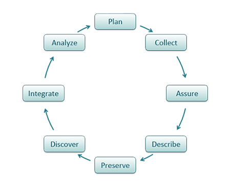
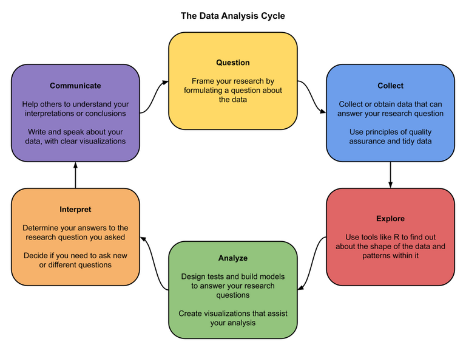

DA 101, Dr. Ladd
Week 2
xkcd.com/2054
It can help you find and understand a dataset or resource.
Broken Earth Examples:
It can help you manage a resource and tell you about how it was created.
It can help you understand the different parts of the dataset and their relationship.
For structured datasets, this is often column labels and their meanings.
Dublin Core – 13 features common to digital data
DDI: Data Documentation Initiative – social, behavioral, and economic sciences
MARC: MAchine Readable Cataloging – libraries, books & media

dataone.org

R for Data Science
xkcd.com/2239